Hoạt ảnh nhân vật
Trong bài học cuối cùng này, chúng ta sẽ dùng các công cụ hoạt ảnh có sẵn của Godot để khiến nhân vật lơ lửng và vỗ cánh. Bạn sẽ học cách thiết kế hoạt ảnh trong trình chỉnh sửa và dùng code để làm cho game trở nên sống động.

Chúng ta sẽ bắt đầu bằng phần giới thiệu cách sử dụng trình chỉnh sửa hoạt ảnh.
Sử dụng trình chỉnh sửa hoạt ảnh
Engine đi kèm các công cụ để tạo hoạt ảnh trong trình chỉnh sửa. Sau đó, bạn có thể dùng code để phát và điều khiển chúng khi chạy (runtime).
Mở scene người chơi, chọn node Player và thêm một node AnimationPlayer.
Dock Animation xuất hiện ở bảng dưới cùng.
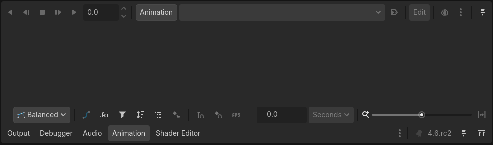
Dock này có một thanh công cụ và menu thả xuống chọn hoạt ảnh ở trên cùng, một trình chỉnh sửa track ở giữa hiện đang trống, cùng các tùy chọn lọc, bắt dính (snap) và thu phóng ở dưới cùng.
Hãy tạo một hoạt ảnh. Nhấp vào Animation -> New.
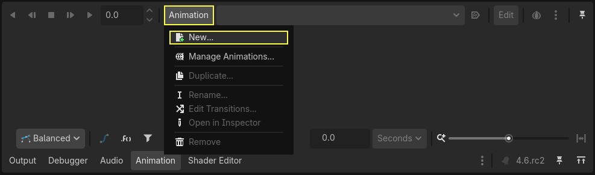
Đặt tên hoạt ảnh là "float".
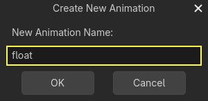
Sau khi bạn tạo hoạt ảnh, dòng thời gian (timeline) xuất hiện với các con số biểu thị thời gian tính bằng giây.
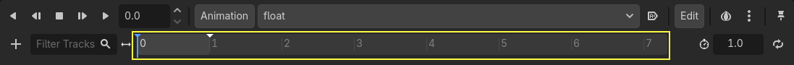
Chúng ta muốn hoạt ảnh tự động phát khi game bắt đầu. Ngoài ra, nó cần được lặp lại.
Để làm vậy, bạn lần lượt nhấp vào nút tự động phát () và nút mũi tên lặp trên thanh công cụ hoạt ảnh.
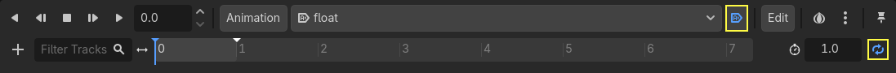
Bạn cũng có thể ghim trình chỉnh sửa hoạt ảnh bằng cách nhấp vào biểu tượng ghim ở góc trên bên phải. Việc này giúp nó không bị thu gọn khi bạn nhấp vào viewport và bỏ chọn các node.
Đặt thời lượng hoạt ảnh là 1.2 giây ở góc trên bên phải của dock.
Bạn sẽ thấy dải màu xám rộng ra một chút. Nó cho biết điểm bắt đầu và kết thúc của hoạt ảnh, còn đường thẳng đứng màu xanh là con trỏ thời gian.
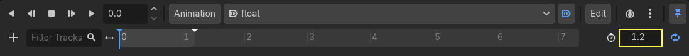
Bạn có thể nhấp và kéo thanh trượt ở góc dưới bên phải để phóng to và thu nhỏ dòng thời gian.
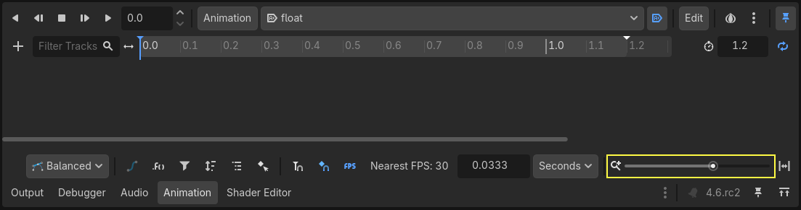
Hoạt ảnh lơ lửng
Với node animation player, bạn có thể tạo hoạt ảnh cho hầu hết các thuộc tính trên bao nhiêu node tùy ý. Hãy để ý biểu tượng chìa khóa bên cạnh các thuộc tính trong Inspector. Bạn có thể nhấp vào bất kỳ biểu tượng nào để tạo một keyframe, tức là một cặp thời gian và giá trị cho thuộc tính tương ứng. Keyframe được chèn tại vị trí con trỏ thời gian trên dòng thời gian.
Hãy chèn các key đầu tiên. Ở đây, chúng ta sẽ tạo hoạt ảnh cho cả vị trí và góc xoay của node Character.
Chọn Character và trong Inspector, mở rộng mục Transform. Nhấp vào biểu tượng chìa khóa bên cạnh Position và Rotation.
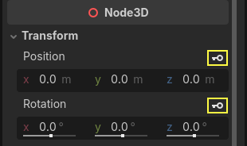
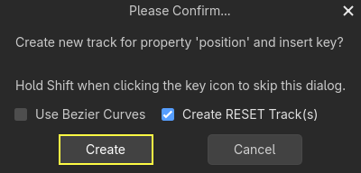
Trong bài hướng dẫn này, chỉ cần tạo (các) RESET Track, đây là lựa chọn mặc định
Hai track xuất hiện trong trình chỉnh sửa, với biểu tượng hình thoi đại diện cho mỗi keyframe.
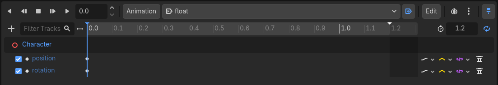
Bạn có thể nhấp và kéo các hình thoi để di chuyển chúng theo thời gian. Di chuyển key vị trí đến 0.3 giây và key góc xoay đến 0.1 giây.
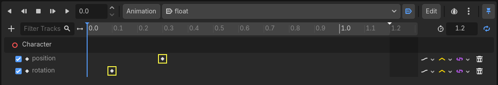
Di chuyển con trỏ thời gian đến 0.5 giây bằng cách nhấp và kéo trên dòng thời gian màu xám, hoặc nhập giá trị vào ô nhập liệu.
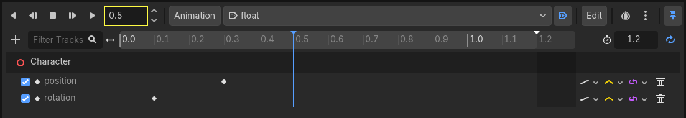
Trong Inspector, đặt trục Y của Position thành 0.65 mét và trục X của Rotation thành 8.
Nếu bạn không thấy các thuộc tính trong bảng Inspector, trước tiên hãy nhấp lại vào node Character trong dock Scene.
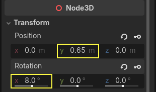
Tạo keyframe cho cả hai thuộc tính
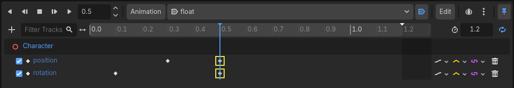
Bây giờ, di chuyển keyframe vị trí đến 0.7 giây bằng cách kéo nó trên dòng thời gian.
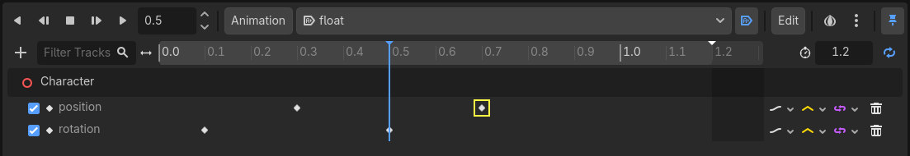
Ghi chú
Bài giảng về các nguyên lý hoạt ảnh nằm ngoài phạm vi của bài hướng dẫn này. Bạn chỉ cần lưu ý rằng không nên phân bố thời gian và khoảng cách đều nhau cho mọi thứ. Thay vào đó, các họa sĩ hoạt hình vận dụng timing (thời gian) và spacing (khoảng cách), hai nguyên lý cốt lõi của hoạt ảnh. Bạn nên tạo độ lệch và độ tương phản trong chuyển động của nhân vật để khiến chúng trông sống động.
Di chuyển con trỏ thời gian đến cuối hoạt ảnh, tại 1.2 giây. Đặt vị trí Y khoảng 0.35 và góc xoay X là -9 độ. Một lần nữa, tạo key cho cả hai thuộc tính.
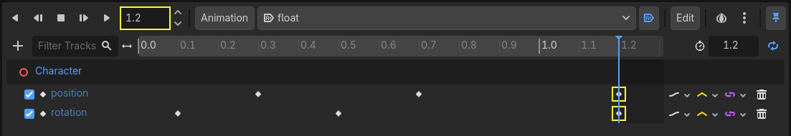
Bạn có thể xem trước kết quả bằng cách nhấp nút phát hoặc nhấn Shift + D. Nhấp nút dừng hoặc nhấn S để dừng phát.
Bạn có thể thấy engine nội suy giữa các keyframe để tạo ra một hoạt ảnh liên tục. Tuy nhiên, hiện tại chuyển động trông rất máy móc. Đó là vì phép nội suy mặc định là tuyến tính, tạo ra các chuyển tiếp đều đặn, không giống cách sinh vật chuyển động trong thế giới thực.
Chúng ta có thể điều khiển chuyển tiếp giữa các keyframe bằng đường cong easing.
Nhấp và kéo quanh hai key đầu tiên trên dòng thời gian để chọn chúng bằng khung chọn.
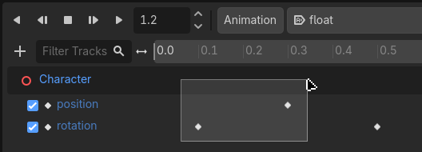
Bạn có thể chỉnh sửa thuộc tính của cả hai key cùng lúc trong Inspector, nơi bạn sẽ thấy thuộc tính Easing.
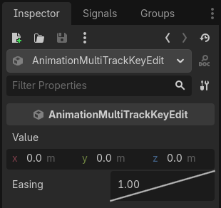
Nhấp và kéo đường cong, kéo nó về phía bên trái. Việc này sẽ tạo hiệu ứng ease-out, tức là chuyển tiếp nhanh lúc đầu và chậm dần khi con trỏ thời gian đến keyframe tiếp theo.
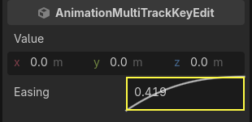
Phát lại hoạt ảnh để thấy sự khác biệt. Nửa đầu hẳn đã có cảm giác nảy hơn một chút.
Áp dụng ease-out cho keyframe thứ hai trong track góc xoay.
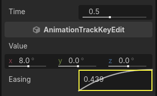
Làm ngược lại với keyframe vị trí thứ hai, kéo nó sang bên phải.
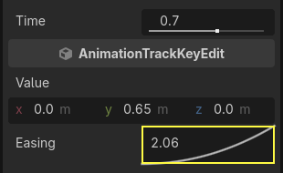
Hoạt ảnh của bạn sẽ trông gần giống như thế này.
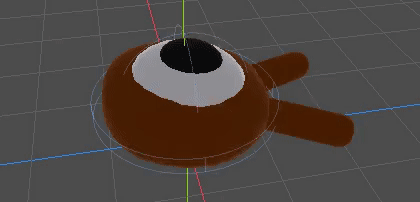
Ghi chú
Hoạt ảnh cập nhật thuộc tính của các node được tạo hoạt ảnh mỗi frame, ghi đè các giá trị ban đầu. Nếu chúng ta tạo hoạt ảnh trực tiếp cho node Player, chúng ta sẽ không thể di chuyển nó bằng code. Đây là lúc node Pivot phát huy tác dụng: dù đã tạo hoạt ảnh cho Character, chúng ta vẫn có thể di chuyển và xoay Pivot, rồi chồng thêm các thay đổi lên trên hoạt ảnh trong script.
Nếu bạn chạy game, sinh vật của người chơi giờ sẽ lơ lửng!
Nếu sinh vật hơi quá sát mặt sàn, bạn có thể di chuyển Pivot lên trên để bù lại.
Điều khiển hoạt ảnh bằng code
Chúng ta có thể dùng code để điều khiển việc phát hoạt ảnh dựa trên đầu vào của người chơi. Hãy thay đổi tốc độ hoạt ảnh khi nhân vật đang di chuyển.
Mở script của Player bằng cách nhấp vào biểu tượng script bên cạnh nó.
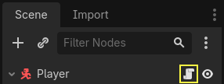
Trong _physics_process(), sau dòng kiểm tra vector direction, hãy thêm đoạn code sau.
func _physics_process(delta):
#...
if direction != Vector3.ZERO:
#...
$AnimationPlayer.speed_scale = 4
else:
$AnimationPlayer.speed_scale = 1
public override void _PhysicsProcess(double delta)
{
// ...
if (direction != Vector3.Zero)
{
// ...
GetNode<AnimationPlayer>("AnimationPlayer").SpeedScale = 4;
}
else
{
GetNode<AnimationPlayer>("AnimationPlayer").SpeedScale = 1;
}
}
Đoạn code này khiến khi người chơi di chuyển, chúng ta nhân tốc độ phát lên 4. Khi họ dừng lại, chúng ta đặt lại về bình thường.
Chúng ta đã đề cập rằng Pivot có thể chồng các transform lên trên hoạt ảnh. Chúng ta có thể làm nhân vật uốn theo đường vòng cung khi nhảy bằng dòng code sau. Hãy thêm nó vào cuối _physics_process().
func _physics_process(delta):
#...
$Pivot.rotation.x = PI / 6 * velocity.y / jump_impulse
public override void _PhysicsProcess(double delta)
{
// ...
var pivot = GetNode<Node3D>("Pivot");
pivot.Rotation = new Vector3(Mathf.Pi / 6.0f * Velocity.Y / JumpImpulse, pivot.Rotation.Y, pivot.Rotation.Z);
}
Tạo hoạt ảnh cho quái vật
Đây là một mẹo hay khác với hoạt ảnh trong Godot: miễn là bạn dùng cấu trúc node tương tự, bạn có thể sao chép chúng sang các scene khác.
Ví dụ, cả scene Mob và Player đều có node Pivot và Character, nên chúng ta có thể dùng lại hoạt ảnh giữa chúng.
Mở scene Player, chọn node AnimationPlayer rồi nhấp vào Animation > Manage Animations.... Nhấp nút Copy animation to clipboard (hai hình vuông nhỏ) bên cạnh hoạt ảnh float. Nhấp OK để đóng cửa sổ.
Sau đó mở mob.tscn, tạo một node con AnimationPlayer và chọn nó. Nhấp Animation > Manage Animations, rồi New Library. Bạn sẽ thấy thông báo "Global library will be created." Để trống ô văn bản và nhấp OK. Nhấp biểu tượng Paste (bảng tạm) và hoạt ảnh sẽ xuất hiện trong cửa sổ. Nhấp OK để đóng cửa sổ.
Tiếp theo, hãy đảm bảo nút tự động phát () và nút mũi tên lặp (Animation looping) cũng được bật trong trình chỉnh sửa hoạt ảnh ở bảng dưới cùng. Vậy là xong; mọi quái vật giờ sẽ phát hoạt ảnh float.
Chúng ta có thể thay đổi tốc độ phát dựa trên random_speed của sinh vật. Mở script của Mob và ở cuối hàm initialize(), hãy thêm dòng sau.
func initialize(start_position, player_position):
#...
$AnimationPlayer.speed_scale = random_speed / min_speed
public void Initialize(Vector3 startPosition, Vector3 playerPosition)
{
// ...
GetNode<AnimationPlayer>("AnimationPlayer").SpeedScale = randomSpeed / MinSpeed;
}
Và như vậy, bạn đã hoàn thành việc lập trình game 3D hoàn chỉnh đầu tiên của mình.
Xin chúc mừng!
Trong phần tiếp theo, chúng ta sẽ tóm tắt nhanh những gì bạn đã học và cung cấp một số liên kết để bạn tiếp tục học thêm. Còn bây giờ, đây là player.gd và mob.gd hoàn chỉnh để bạn đối chiếu với code của mình.
Đây là script của Player.
extends CharacterBody3D
signal hit
# How fast the player moves in meters per second.
@export var speed = 14
# The downward acceleration while in the air, in meters per second squared.
@export var fall_acceleration = 75
# Vertical impulse applied to the character upon jumping in meters per second.
@export var jump_impulse = 20
# Vertical impulse applied to the character upon bouncing over a mob
# in meters per second.
@export var bounce_impulse = 16
var target_velocity = Vector3.ZERO
func _physics_process(delta):
# We create a local variable to store the input direction
var direction = Vector3.ZERO
# We check for each move input and update the direction accordingly
if Input.is_action_pressed("move_right"):
direction.x = direction.x + 1
if Input.is_action_pressed("move_left"):
direction.x = direction.x - 1
if Input.is_action_pressed("move_back"):
# Notice how we are working with the vector's x and z axes.
# In 3D, the XZ plane is the ground plane.
direction.z = direction.z + 1
if Input.is_action_pressed("move_forward"):
direction.z = direction.z - 1
# Prevent diagonal movement being very fast
if direction != Vector3.ZERO:
direction = direction.normalized()
# Setting the basis property will affect the rotation of the node.
$Pivot.basis = Basis.looking_at(direction)
$AnimationPlayer.speed_scale = 4
else:
$AnimationPlayer.speed_scale = 1
# Ground Velocity
target_velocity.x = direction.x * speed
target_velocity.z = direction.z * speed
# Vertical Velocity
if not is_on_floor(): # If in the air, fall towards the floor
target_velocity.y = target_velocity.y - (fall_acceleration * delta)
# Jumping.
if is_on_floor() and Input.is_action_just_pressed("jump"):
target_velocity.y = jump_impulse
# Iterate through all collisions that occurred this frame
# in C this would be for(int i = 0; i < collisions.Count; i++)
for index in range(get_slide_collision_count()):
# We get one of the collisions with the player
var collision = get_slide_collision(index)
# If the collision is with ground
if collision.get_collider() == null:
continue
# If the collider is with a mob
if collision.get_collider().is_in_group("mob"):
var mob = collision.get_collider()
# we check that we are hitting it from above.
if Vector3.UP.dot(collision.get_normal()) > 0.1:
# If so, we squash it and bounce.
mob.squash()
target_velocity.y = bounce_impulse
# Prevent further duplicate calls.
break
# Moving the Character
velocity = target_velocity
move_and_slide()
$Pivot.rotation.x = PI / 6 * velocity.y / jump_impulse
# And this function at the bottom.
func die():
hit.emit()
queue_free()
func _on_mob_detector_body_entered(body):
die()
using Godot;
public partial class Player : CharacterBody3D
{
// Emitted when the player was hit by a mob.
[Signal]
public delegate void HitEventHandler();
// How fast the player moves in meters per second.
[Export]
public int Speed { get; set; } = 14;
// The downward acceleration when in the air, in meters per second squared.
[Export]
public int FallAcceleration { get; set; } = 75;
// Vertical impulse applied to the character upon jumping in meters per second.
[Export]
public int JumpImpulse { get; set; } = 20;
// Vertical impulse applied to the character upon bouncing over a mob in meters per second.
[Export]
public int BounceImpulse { get; set; } = 16;
private Vector3 _targetVelocity = Vector3.Zero;
public override void _PhysicsProcess(double delta)
{
// We create a local variable to store the input direction.
var direction = Vector3.Zero;
// We check for each move input and update the direction accordingly.
if (Input.IsActionPressed("move_right"))
{
direction.X += 1.0f;
}
if (Input.IsActionPressed("move_left"))
{
direction.X -= 1.0f;
}
if (Input.IsActionPressed("move_back"))
{
// Notice how we are working with the vector's X and Z axes.
// In 3D, the XZ plane is the ground plane.
direction.Z += 1.0f;
}
if (Input.IsActionPressed("move_forward"))
{
direction.Z -= 1.0f;
}
// Prevent diagonal movement being very fast.
if (direction != Vector3.Zero)
{
direction = direction.Normalized();
// Setting the basis property will affect the rotation of the node.
GetNode<Node3D>("Pivot").Basis = Basis.LookingAt(direction);
GetNode<AnimationPlayer>("AnimationPlayer").SpeedScale = 4;
}
else
{
GetNode<AnimationPlayer>("AnimationPlayer").SpeedScale = 1;
}
// Ground velocity
_targetVelocity.X = direction.X * Speed;
_targetVelocity.Z = direction.Z * Speed;
// Vertical velocity
if (!IsOnFloor())
{
_targetVelocity.Y -= FallAcceleration * (float)delta;
}
// Jumping.
if (IsOnFloor() && Input.IsActionJustPressed("jump"))
{
_targetVelocity.Y += JumpImpulse;
}
// Iterate through all collisions that occurred this frame.
for (int index = 0; index < GetSlideCollisionCount(); index++)
{
// We get one of the collisions with the player.
KinematicCollision3D collision = GetSlideCollision(index);
// If the collision is with a mob.
if (collision.GetCollider() is Mob mob)
{
// We check that we are hitting it from above.
if (Vector3.Up.Dot(collision.GetNormal()) > 0.1f)
{
// If so, we squash it and bounce.
mob.Squash();
_targetVelocity.Y = BounceImpulse;
// Prevent further duplicate calls.
break;
}
}
}
// Moving the character
Velocity = _targetVelocity;
MoveAndSlide();
var pivot = GetNode<Node3D>("Pivot");
pivot.Rotation = new Vector3(Mathf.Pi / 6.0f * Velocity.Y / JumpImpulse, pivot.Rotation.Y, pivot.Rotation.Z);
}
private void Die()
{
EmitSignal(SignalName.Hit);
QueueFree();
}
private void OnMobDetectorBodyEntered(Node body)
{
Die();
}
}
Và script của Mob.
extends CharacterBody3D
# Minimum speed of the mob in meters per second.
@export var min_speed = 10.0
# Maximum speed of the mob in meters per second.
@export var max_speed = 18.0
# Emitted when the player jumped on the mob
signal squashed
func _physics_process(_delta):
move_and_slide()
# This function will be called from the Main scene.
func initialize(start_position, player_position):
# We position the mob by placing it at start_position
# and rotate it towards player_position, so it looks at the player.
look_at_from_position(start_position, player_position, Vector3.UP)
# Rotate this mob randomly within range of -45 and +45 degrees,
# so that it doesn't move directly towards the player.
rotate_y(randf_range(-PI / 4, PI / 4))
# We calculate a random speed (float)
var random_speed = randf_range(min_speed, max_speed)
# We calculate a forward velocity that represents the speed.
velocity = Vector3.FORWARD * random_speed
# We then rotate the velocity vector based on the mob's Y rotation
# in order to move in the direction the mob is looking.
velocity = velocity.rotated(Vector3.UP, rotation.y)
$AnimationPlayer.speed_scale = random_speed / min_speed
func _on_visible_on_screen_notifier_3d_screen_exited():
queue_free()
func squash():
squashed.emit()
queue_free() # Destroy this node
using Godot;
public partial class Mob : CharacterBody3D
{
// Emitted when the played jumped on the mob.
[Signal]
public delegate void SquashedEventHandler();
// Minimum speed of the mob in meters per second
[Export]
public float MinSpeed { get; set; } = 10.0f;
// Maximum speed of the mob in meters per second
[Export]
public float MaxSpeed { get; set; } = 18.0f;
public override void _PhysicsProcess(double delta)
{
MoveAndSlide();
}
// This function will be called from the Main scene.
public void Initialize(Vector3 startPosition, Vector3 playerPosition)
{
// We position the mob by placing it at startPosition
// and rotate it towards playerPosition, so it looks at the player.
LookAtFromPosition(startPosition, playerPosition, Vector3.Up);
// Rotate this mob randomly within range of -45 and +45 degrees,
// so that it doesn't move directly towards the player.
RotateY((float)GD.RandRange(-Mathf.Pi / 4.0, Mathf.Pi / 4.0));
// We calculate a random speed (float).
float randomSpeed = GD.RandRange(MinSpeed, MaxSpeed);
// We calculate a forward velocity that represents the speed.
Velocity = Vector3.Forward * randomSpeed;
// We then rotate the velocity vector based on the mob's Y rotation
// in order to move in the direction the mob is looking.
Velocity = Velocity.Rotated(Vector3.Up, Rotation.Y);
GetNode<AnimationPlayer>("AnimationPlayer").SpeedScale = randomSpeed / MinSpeed;
}
public void Squash()
{
EmitSignal(SignalName.Squashed);
QueueFree(); // Destroy this node
}
private void OnVisibilityNotifierScreenExited()
{
QueueFree();
}
}